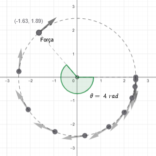

Revisão: Movimento Circular com Aceleração Tangencial Constante
Imagine uma partícula submetida a uma força resultante de módulo constante, cuja direção varia continuamente de modo a permanecer sempre tangente a uma circunferência imaginária. Tomando o centro dessa circunferência como a origem \((0,0)\) de um sistema de coordenadas cartesianas, essa força não altera a distância da partícula ao centro, mas modifica sua velocidade ao longo da trajetória.
Como consequência, a partícula descreve um movimento circular em torno da origem, mantendo constante o raio da trajetória. Em termos cartesianos, isso significa que sua posição \((x, y)\) satisfaz a relação \(x^2 + y^2 = R^2\), ou seja, ela permanece sempre sobre a circunferência de raio \(R\).
Embora a distância ao centro permaneça constante, a posição angular da partícula varia ao longo do tempo. O ângulo \(\theta\), que indica sua posição em relação a um eixo de referência, não cresce de forma uniforme: sua taxa de variação aumenta com o tempo.
Esse comportamento caracteriza um movimento circular acelerado, no qual existe uma aceleração angular associada à força tangencial aplicada à partícula.
Para compreender melhor essa dinâmica, é útil visualizar a evolução do movimento. A figura a seguir ilustra a trajetória circular, a direção da força resultante (sempre tangente à circunferência) e o ângulo \(\theta\), que cresce de forma acelerada ao longo do tempo.

No applet a seguir, é possível visualizar a variação do ângulo \(\theta\) ao longo do tempo. Observe como o comprimento do arco (que representa a distância percorrida sobre a circunferência) aumenta de forma acelerada à medida que o movimento evolui.
Podemos imaginar “desenrolar” esse arco e representá-lo como um segmento de reta. Nesse caso, o problema se torna análogo ao de um movimento retilíneo acelerado com aceleração constante. No entanto, como o movimento real é circular, é mais adequado descrever a distância percorrida \(C\) (destacado em azul) em função do ângulo \(\theta\) (em radianos) e do raio \(R\).
A variação do comprimento do arco ao longo do tempo está associada à velocidade tangencial da partícula. Por sua vez, a taxa de variação dessa velocidade define a aceleração tangencial:
De acordo com a segunda lei de Newton, a aceleração tangencial é proporcional à força resultante aplicada na direção tangente à trajetória e inversamente proporcional à massa da partícula. Assim, temos:
Observação: se estivermos tratando de um corpo rígido em rotação, em vez de considerar apenas a massa, é necessário utilizar o momento de inércia em relação ao eixo de rotação, o que leva a uma formulação mais geral da dinâmica rotacional, mas que está fora do escopo desta análise.